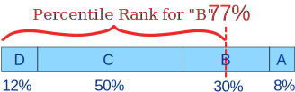
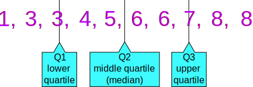

Percentiles
Percentile: the value below which a percentage of data falls.
Example: You are the fourth tallest person in a group of 20
80% of people are shorter than you:

That means you are at the 80th percentile.
If your height is 1.85m then "1.85m" is the 80th percentile height in that group.
In Order
Have the data in order, so you know which values are above and below.
- To calculate percentiles of height: have the data in height order (sorted by height).
- To calculate percentiles of age: have the data in age order.
- And so on.
Grouped Data
When the data is grouped:
Add up all percentages below the score,
plus half the percentage at the score.
Example: You Score a B!
In the test 12% got D, 50% got C, 30% got B and 8% got A

You got a B, so add up
- all the 12% that got D,
- all the 50% that got C,
- half of the 30% that got B,
for a total percentile of 12% + 50% + 15% = 77%
In other words you did "as well or better than 77% of the class"
(Why take half of B? Because you shouldn't imagine you got the "Best B", or the "Worst B", just an average B.)
Deciles
Deciles are similar to Percentiles (sounds like decimal and percentile together), as they split the data into 10% groups:
- The 1st decile is the 10th percentile (the value that divides the data so 10% is below it)
- The 2nd decile is the 20th percentile (the value that divides the data so 20% is below it)
- etc!
Example: (continued)
You are at the 8th decile (the 80th percentile).
Quartiles
Another related idea is Quartiles, which splits the data into quarters:
Example: 1, 3, 3, 4, 5, 6, 6, 7, 8, 8
The numbers are in order. Cut the list into quarters:

In this case Quartile 2 is half way between 5 and 6:
Q2 = (5+6)/2 = 5.5
And the result is:
- Quartile 1 (Q1) = 3
- Quartile 2 (Q2) = 5.5
- Quartile 3 (Q3) = 7
The Quartiles also divide the data into divisions of 25%, so:
- Quartile 1 (Q1) can be called the 25th percentile
- Quartile 2 (Q2) can be called the 50th percentile
- Quartile 3 (Q3) can be called the 75th percentile
Example: (continued)
For 1, 3, 3, 4, 5, 6, 6, 7, 8, 8:
- The 25th percentile = 3
- The 50th percentile = 5.5
- The 75th percentile = 7
Estimating Percentiles
We can estimate percentiles from a line graph.
Example: Shopping
A total of 10,000 people visited the shopping mall over 12 hours:
| Time (hours) | People |
|---|---|
| 0 | 0 |
| 2 | 350 |
| 4 | 1100 |
| 6 | 2400 |
| 8 | 6500 |
| 10 | 8850 |
| 12 | 10,000 |
a) Estimate the 30th percentile (when 30% of the visitors had arrived).
b) Estimate what percentile of visitors had arrived after 11 hours.
First draw a line graph of the data: plot the points and join them with a smooth curve:

a) The 30th percentile occurs when the visits reach 3,000.
Draw a line horizontally across from 3,000 until you hit the curve, then draw a line vertically downwards to read off the time on the horizontal axis:

So the 30th percentile occurs after about 6.5 hours.
b) To estimate the percentile of visits after 11 hours: draw a line vertically up from 11 until you hit the curve, then draw a line horizontally across to read off the population on the vertical axis:

So the visits at 11 hours were about 9,500, which is the 95th percentile.